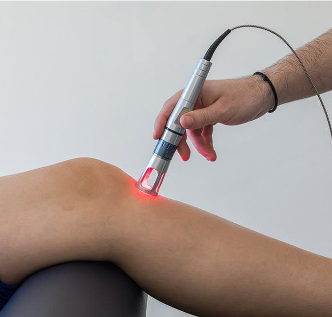
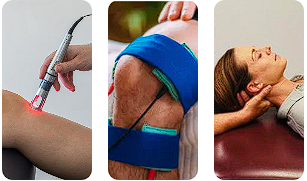
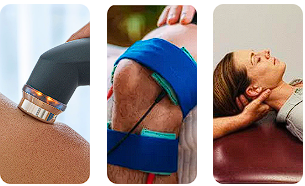

Root-cause focused advanced therapies for faster, lasting relief !
Photo-biomodulation by Class-IV Laser
Photobiomodulation (PBM) with a Class IV laser uses high-intensity light to stimulate cellular activity, promoting healing and pain reduction by increasing ATP production, reducing inflammation, and accelerating tissue repair. Class IV lasers, unlike surgical lasers, are designed for therapeutic use, delivering a large amount of photonic energy in a shorter time to penetrate tissues deeply. This non-thermal process interacts with chromophores in cells, triggering a cascade of beneficial physiological reactions.
Laser Combination Therapy
( Laser | IFT | Traction )

Laser combination therapy with Interferential Therapy(IFT) & Decompression Therapy (Traction) involves using these three modalities together in physiotherapy for comprehensive pain relief, enhanced healing, and accelerated recovery. This combined approach leverages IFT's deep tissue electrical stimulation for muscle and nerve stimulation, Decompression Therapy (Traction) for releasing inter-bone compression with the biostimulatory effects of laser therapy to promote cellular repair and reduce inflammation. The synergy of these treatments is typically delivered through advanced, multi-modality devices designed for both clinical use.
`Ultrasound Combination Therapy ( US | IFT | Traction )
Ultrasound Combination Therapy with Interferential Therapy (IFT) & Decompression Therapy (Traction) is a physiotherapy technique that simultaneously applies high-frequency sound waves (ultrasound), low-frequency electrical currents (IFT) & Decompression Therapy (Traction) for releasing inter-bone compression to the same area to promote pain relief, reduce inflammation, and accelerate healing through a synergistic effect.